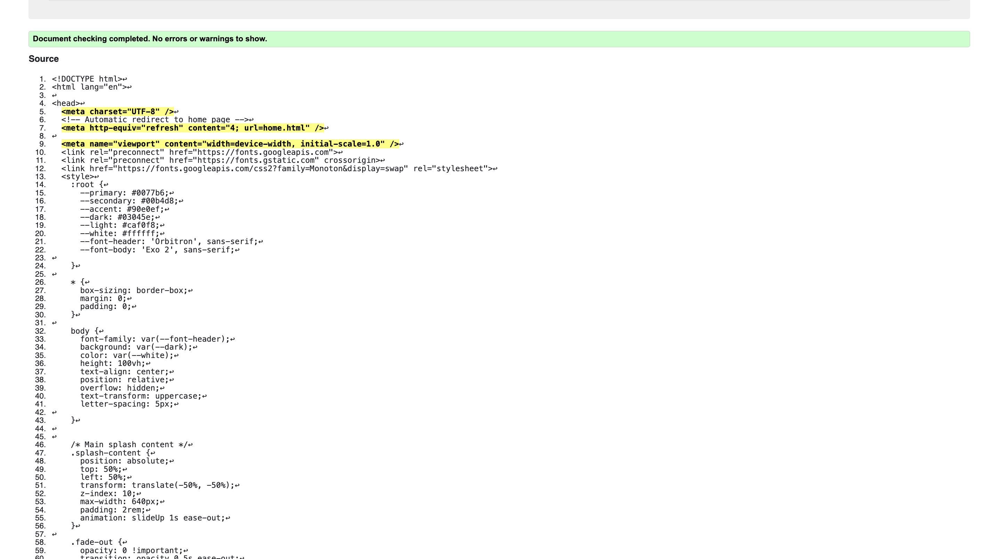
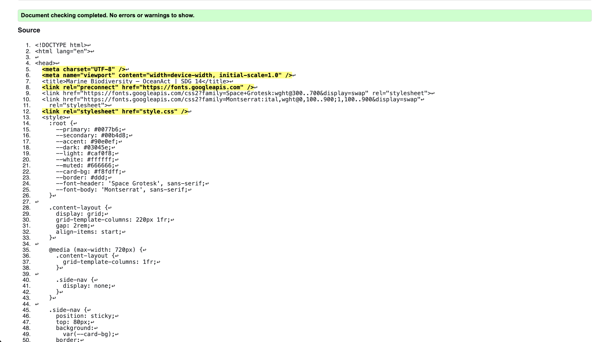

splash screen validation report
The OceanAct splash page looks great thanks to its deep colour scheme based on aquatic colours and
advanced typography.
The dark blue background with cyan accents (dark: #03045e and 00b4d8) works perfectly with the theme
of SDG 14 of Life Below Water.
The design includes a fogged background video and a bobbing wave icon, which give the user a smooth
experience of a mission that is both educational and easy to use before they even get to the home
page.
It also clearly shows the project's mission statement and the names of the people who made it:
Saarujan, Ruchira, and Omika. This makes sure that the people who made it are directly connected to
the project's goal of protecting the ocean.
The app works well and is powerful from a technical point of view.
The visible countdown and the visible button called "Skip Intro" show that the app respects the
user's time and gives it a sense of motion without slowing down.
There are two layers to the redirection logic: one with a
refresh tag and the other with a JavaScript timer. This makes it possible to switch to
home.html in any browser.
A combination of readable code and useful content creates a professional digital handshake that
successfully closes the gap between the landing page and the solution itself.

Back to Page Editor page
Content ST2 validation report
The Ocean Biodiversity page is a well-organised and informative resource that strikes a good balance
between teaching and urging people to take action on SDG 14.
The page starts with a scientific explanation of the ocean's vertical layers, from the Sunlight Zone
to the Abyssal Zone.
Then it moves on to the harsh realities of 2026,
"Global Water Bankruptcy" and the Fourth Global Coral Bleaching Event. Adding certain critically
endangered species, like the Vaquita Porpoise and Blackchin Guitarfish,
arger ecological data adds a human-interest element that is needed.
The page is a full "hotspot" for marine advocacy, with a clean, modern design that makes it
easy for anyone to understand complicated topics like ocean acidification and carbon sequestration.

Back to Page Editor page
Action impact simulator validation report
The Action Impact Simulator (AIS) is a fun and interactive part of the OceanAct project that makes
environmental activism into a game.
The page gives specific actions, like refusing
single-use plastics or planting native coastal plants, real point values, which turn vague
conservation goals into a personalised "impact score." Dynamic background transitions, where the
pictures change from simple ocean waves to a colourful coral reef as the user's score goes up,
are a great way to show how they are helping to achieve SDG 14.
The tool is easy to use because it uses ARIA roles and keyboard navigation to make sure that
everyone can see how far they have come toward becoming a "Ocean Champion."
Back to Page Editor page
Include a link back to the corresponding section of the Page Editor.